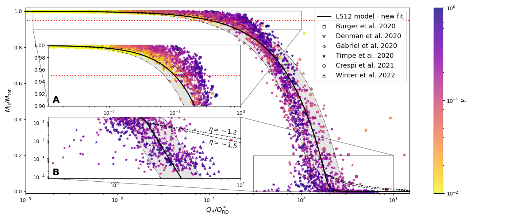
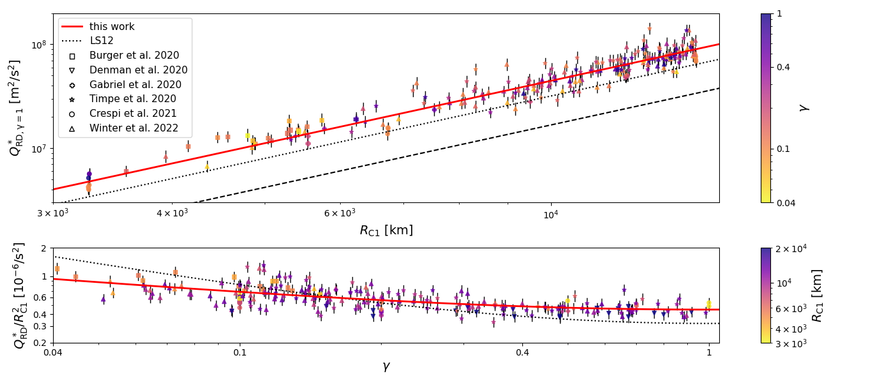
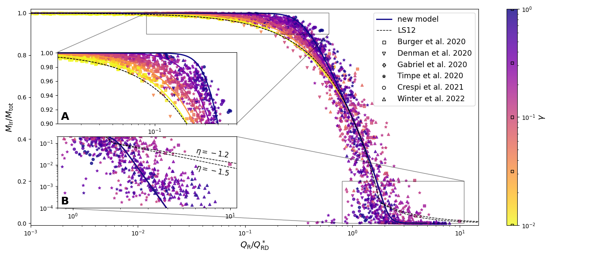
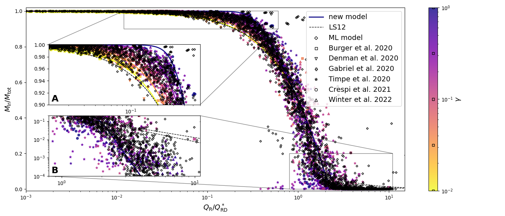

تصادمات الكواكب الأولية: قوانين قياس جديدة من محاكيات SPH
تتمثل إحدى المقاربات الشائعة لحل تصادمات الكواكب الأولية في محاكيات تكوّن الكواكب في استخدام قوانين قياس تحليلية. وقد طوّر Leinhardt & Stewart (2012) أكثر هذه القوانين استعمالا انطلاقا من فهرس يضم 180 محاكاة N-body لتصادمات أجسام من نوع أكوام الأنقاض. في هذا العمل، نستخدم فهرسا جديدا يضم أكثر من 20,000 محاكاة SPH لاختبار صلاحية قوانين القياس الخاصة بـ Leinhardt & Stewart (2012) وقدرتها التنبؤية. نجد أن هذه القوانين تبالغ في تقدير كفاءة التفتت في نظام الاندماج، وأنها لا تستطيع إعادة إنتاج نواتج التصادم في النظام الفائق الكارثي على نحو ملائم. وفي نظام الاندماج، نلاحظ أيضا اعتمادا معنويا بين ناتج التصادم، من حيث كتلة أكبر البقايا، والكتلة النسبية للكواكب الأولية المتصادمة. نقدم هنا مجموعة جديدة من قوانين القياس القادرة على التنبؤ بناتج التصادم بصورة أفضل في جميع الأنظمة، كما تستطيع إعادة إنتاج الاعتماد المرصود على نسبة الكتلة. نقارن قوانين القياس الجديدة لدينا بمقاربة قائمة على التعلم الآلي، ونحصل على كفاءة تنبؤية مماثلة.
Key Words.:
قواعد البيانات الفلكية: متفرقات – الميكانيكا السماوية – الكواكب الصغيرة، الكويكبات: عام – الكواكب والأقمار: التكوّن – الكواكب والأقمار: التطور الفيزيائي – الكواكب والأقمار: الكواكب الأرضية1 مقدمة
تُعد التصادمات الزوجية الآلية الرئيسة التي تقود نمو الكويكبات الكوكبية (أجسام صخرية بحجم كم) إلى كواكب أرضية، وخصوصا داخل خط جليد الماء (مثلا: Wetherill 1980, Kokubo & Ida 1996, Chambers 2001, Izidoro et al. 2017). غير أن تضمين التصادمات في محاكيات تكوّن الكواكب الأرضية ثبت أنه تحد صعب على نحو خاص لسببين رئيسين. أولا، إن المقاييس الزمنية النموذجية المتضمنة في التصادمات أقصر برتب مقدار من الفترة المدارية للكويكبات الكوكبية (Benz et al. 2007, Kegerreis et al. 2020). ثانيا، من الصعب حاسوبيا حلّ تطور كل المادة المقذوفة أثناء التصادم وتكامله بالكامل، إذ تمتد من مادة غازية، مثل الغلاف الجوي والصخر والماء المتبخرين، إلى شظايا صلبة بحجم كويكبات كبيرة (Leinhardt & Stewart 2012, Kegerreis et al. 2020, Crespi et al. 2021).
| Reference | SPH algorithm | composition | EoS | |||
|---|---|---|---|---|---|---|
| Denman et al. (2020) | GADGET† | 122 | , , | Fe, silicate and H (gas) | MANEOS | |
| Gabriel et al. (2020) | SPHLATCH⋆ | 1401 | Fe, quartz and H20 | not specified | ||
| Timpe et al. (2020) | Gasoline∙ | 10662 | Fe and granite | Tillotson | ||
| Burger et al. (2020) | miluphcuda∗ | 9980 | Fe, silicate and H20 | Tillotson | ||
| Crespi et al. (2021) | miluphcuda∗ | 858 | 0.1, 0.5, 1 | 80-90% basalt, 10-20% H20 | Tillotson | |
| Winter et al. (2023) | miluphcuda∗ | 10164 | Fe, silicate and H20 | Tillotson | ||
| Benz et al. (2007) | generic SPH‡ | 17 | 0.1375 | 1/10, 1/6, 1/5 | 33% Fe, 66% dunite | ANEOS |
| Marcus et al. (2009) | GADGET† | 1, 5, 10 | 1/4, 1/2, 3/4 | 33% Fe, 66% fosterite | MANEOS | |
| Marcus et al. (2010) | GADGET† | 0.5-5 | 1/4, 1/2, 1 | 50% serpentine, 50% H20 | MANEOS |
يمكن تجاوز التحدي الأول باستخدام مكاملات سيمبلكتية وهجينة سيمبلكتية مثل SyMBA (Duncan et al., 1998) وMERCURY (Chambers, 1999)، وهي قادرة على تكامل الاقترابات القريبة والتصادمات من دون التأثير معنويا في دقة التكامل. أما التحدي الثاني فما يزال موضوعا بحثيا مفتوحا. وقد اختُبرت مقاربات متعددة خلال العقدين الماضيين. أبسط هذه المقاربات هو اعتبار أن جميع التصادمات تؤدي إلى اندماج غير مرن بين الجسمين المتصادمين. وقد تمكن هذا التقريب من إعادة إنتاج الخصائص الأساسية للنظام الشمسي بكفاءة، مبينا أهمية الدور الذي تؤديه التصادمات بين الكواكب الأولية في تطور الأنظمة الكوكبية (Wetherill 1994, Chambers & Wetherill 1998, Quintana et al. 2002, Raymond et al. 2004, O’Brien et al. 2006, Raymond et al. 2006, Quintana et al. 2016). إلا أن دراسات حديثة أظهرت أنه عندما يُفترض أن التصادمات غير مرنة، فإن زمن تكوّن الكواكب الأرضية ينخفض بدرجة ملحوظة، ويُبالغ في تقدير كل من الكتلة ومحتوى الماء في الجماعة النهائية من الكواكب (Chambers 2013, Leinhardt et al. 2015, Burger et al. 2018, Burger et al. 2020). ومن جهة أخرى، ما يزال أثر التفتت في تطور الكواكب الأرضية موضوع نقاش، ولا سيما عند دراسة تكوّن الكواكب القريبة في الجماعة المرصودة (مثلا Mustill et al. 2018, Poon et al. 2020, Esteves et al. 2022).
تتمثل مقاربة أكثر تقدما في السماح بالتفتت أثناء التصادمات وتقدير خصائص الأجسام الرئيسة بعد التصادم بالرجوع إلى قوانين القياس (مثلا Chambers 2013, Quintana et al. 2016, Wallace et al. 2017, Mustill et al. 2018, Clement et al. 2019a, Clement et al. 2019b, Poon et al. 2020, Ishigaki et al. 2021, Clement et al. 2022) . وباستخدام محاكيات N-body مباشرة لتصادمات بين كواكب أولية متمايزة من نوع أكوام الأنقاض (Leinhardt et al., 2000)، اشتق Kokubo & Genda (2010) وLeinhardt & Stewart (2012) صِيغا تجريبية يمكن من خلالها تقدير كتلة البقايا التصادمية الرئيسة. وعلى وجه الخصوص، تتيح قوانين القياس الواسعة الاستخدام من العمل الرائد لـ Leinhardt & Stewart (2012)، المشار إليه فيما يلي بـ LS12، تقدير كتلة أكبر وثاني أكبر بقايا مباشرة انطلاقا من خواص التصادم. غير أن مجموعة البيانات المستخدمة لاشتقاق قوانين القياس الخاصة بـ LS12، التي تضم نحو 180 محاكاة، اقتصرت على ما مجموعه 23 نقاط بيانات في مدى الكتلة M⊕، منها 3 نقاط بيانات فقط في النظام الفائق الكارثي.
خلال السنوات القليلة الماضية، أُنجزت فهارس واسعة من محاكيات الهيدروديناميكا الجسيمية الملساء11 1 لمزيد من التفاصيل حول محاكيات الهيدروديناميكا الجسيمية الملساء (SPH)، نحيل القارئ إلى أعمال Benz (1990) وMonaghan (1992). (SPH) للتصادمات، وأصبحت متاحة الآن. وعلى وجه الخصوص، أجرى Burger et al. (2020) سلسلة من 48 محاكاة لاستكشاف تكوّن الكواكب الأرضية، مع تضمين محاكيات SPH أثناء التنفيذ لنمذجة التصادمات. وأسفر هذا الجهد عن مجموعة تضم 9,980 محاكاة لتصادمات بين كواكب أولية. وبالإضافة إلى ذلك، زاد Winter et al. (2023) فهرسهم السابق المؤلف من 858 محاكاة SPH (المعروض في Crespi et al. 2021) بأكثر من عشرة أضعاف، وذلك بإجراء 10,164 محاكاة جديدة أخذت أيضا في الحسبان الزخم الدوراني للأجسام المتصادمة.
في هذا العمل، نستخدم هذه الفهارس الجديدة من محاكيات SPH لاختبار قوانين القياس الخاصة بـ LS12 وتحسينها. ونقترح صيغة جديدة من نموذجهم تكون أكثر دقة في التنبؤ بكتلة أكبر بقايا بعد التصادم. وعلاوة على ذلك، نتحقق من صلاحية هذه المجموعة الجديدة من قوانين القياس بمقارنة كفاءتها التنبؤية بمقاربة قائمة على التعلم الآلي. في القسم 2، نعرض (i) معاملات أفضل ملاءمة جديدة لقوانين القياس الخاصة بـ LS12، و(ii) مجموعة جديدة من قوانين القياس، و(iii) نموذج التعلم الآلي المستخدم لاختبار قانون القياس الجديد والتحقق منه. ويُخصص القسم الأخير لمناقشة نتائجنا والاستنتاجات الرئيسة.
2 ملاءمات محسّنة لمجموعة بيانات SPH الجديدة
تمتد مجموعة البيانات الأصلية التي استخدمها LS12 لاشتقاق قانون القياس لديهم من أجسام بحجم كيلومترات إلى أجسام بكتلة 10 من كتلة الأرض. وبفضل هذا المدى الواسع من الكتل، تمكن المؤلفون من رصد انتقال بين تصادمات تشمل أجساما صغيرة ضعيفة وتصادمات بين أجسام أكبر تهيمن عليها الجاذبية، مع نقطة انتقال قرب M⊕. ومع أن قوانين القياس هي نفسها في النظامين، فإن المعاملات التي تحكم قانون القياس تختلف. هنا، قررنا التركيز على التصادمات بين الأجسام التي تهيمن عليها الجاذبية فقط، لأن مجموعة البيانات الجديدة من محاكيات SPH المستخدمة في هذه الدراسة تتضمن أساسا أجساما تهيمن عليها الجاذبية. نحيل القارئ إلى أعمال Burger et al. (2020) وCrespi et al. (2021) وWinter et al. (2023) لمزيد من التفاصيل عن الفهارس الثلاثة لمحاكيات SPH. ويُعرض ملخص لهذه الفهارس، إلى جانب مجموعات البيانات التي استخدمها LS12، في الجدول 1 تيسيرا للرجوع.
2.1 ملاءمات تحليلية
استنادا إلى النموذج المعتمد في LS12، يمكن التعبير عن كتلة أكبر بقايا بعد التصادم ()، مقيسة بالكتلة الكلية الداخلة في التصادم ()، بوصفها دالة في طاقة الاصطدام النسبية () مقيسة بمعيار الاضطراب الكارثي (). ويمكن كتابة هذه العلاقة على النحو الآتي:
| (1) |
في الفرع الأول، الذي غالبا ما يشار إليه بالقانون الكوني، يفترض LS12 وجود علاقة خطية بين طاقة الاصطدام وكتلة أكبر البقايا، مع تعريف معيار الاضطراب الكارثي () بأنه الطاقة التي يتشتت عندها نصف الكتلة الكلية. ويمثل افتراض الخطية، المعروض أيضا في أعمال سابقة (Stewart & Leinhardt 2009 وLeinhardt et al. 2009)، نموذجا جيدا للتصادمات ذات الطاقة القريبة من معيار الاضطراب الكارثي. غير أن هذا الافتراض يفشل فعليا في تمثيل التصادمات ذات طاقة الاصطدام المنخفضة () وكذلك التصادمات ذات طاقة الاصطدام العالية () تمثيلا ملائما، كما هو مبين في Housen & Holsapple (1999). ولمعالجة هذه المسألة، أضاف LS12 الفرع الثاني، المشار إليه بالنظام الفائق الكارثي، الذي ينمذج بصورة أفضل الخطية في فضاء log-log التي رصدها مؤلفون متعددون ولُخصت في Holsapple et al. (2002).
أما نموذج معيار الاضطراب الكارثي () في نظام الجاذبية، فقد اشتقه Housen & Holsapple (1990) باستخدام نظرية قياس ، وأعاد LS12 ترتيبه كما يأتي:
| (2) |
حيث إن ثابت قياس يكافئ الإزاحة بالنسبة إلى طاقة الربط الجذبي، و ثابت الجاذبية، و نصف القطر الموافق لجسم كروي كتلته وكثافته g/cm3، و النسبة بين كتلتي المقذوفة والهدف، و ثابت مادي عديم الأبعاد يرتبط باقتران الطاقة والزخم بين المقذوفة والهدف.
لا يعمل هذا النموذج إلا للتصادمات المباشرة. وعندما تتجاوز زاوية التصادم () القيمة الحدية ، حيث يمثل و نصفي قطر الهدف والمقذوفة على التوالي، لا تتفاعل كتلة المقذوفة كلها مع الهدف أثناء التصادم. ومع ذلك، يمكن تطبيق نموذج LS12 على الاصطدامات المائلة باعتبار التصادم المكافئ الذي تُستخدم فيه فقط الكتلة المتفاعلة من المقذوفة. ونظرا إلى اتساع مجموعة البيانات الجديدة، قررنا النظر في التصادمات المباشرة فقط، أي جميع التصادمات التي تحقق .
2.1.1 قانون القياس LS12 - الملاءمات الأصلية

تتيح المعادلة 1، بالاقتران مع المعادلة 2، تقدير كتلة أكبر بقايا بعد التصادم، عند معرفة طاقة الاصطدام () ونصف القطر المركب (). ويتضمن النموذج ثلاثة معاملات حرة: ثابت القياس ، والثابت المادي ، والميل للنظام الفائق الكارثي.
في المقاربة الأصلية التي استخدمها LS12، أجروا ثلاث ملاءمات. أولا، وباستخدام بيانات من أعمال Benz et al. (2007) وMarcus et al. (2009) وMarcus et al. (2010)، قدّروا معيار الاضطراب الكارثي للتصادمات المباشرة من خلال استيفاء خطي لمحاكيات ذات معاملات تصادم متشابهة. ثم لائموا المعادلة 2 مع التوزيع الناتج لـ بوصفه دالة في ، فحصلوا على القيمتين و لمعاملات النموذج. وأخيرا، قدّروا الميل من نقاط البيانات في النظام الفائق الكارثي (الفرع الثاني من المعادلة 1). غير أنه، بسبب العدد المحدود من نقاط البيانات في هذا النظام، لم يكن المعامل مضبوطا جيدا. ونتيجة لذلك، أوصى LS12 باستخدام القيمة استنادا إلى دراسات مخبرية (Kato et al. 1995 وFujiwara et al. 1977).
2.1.2 قانون القياس LS12 - ملاءمة جديدة
على خلاف الإجراء الذي طبقه LS12، والمتمثل في تقدير و أولا من الاستيفاء الخطي لـ ، ثم تقييم معامل النموذج المتبقي عند معرفة و، قررنا استخدام بيانات المحاكاة كلها (، ، ، ) لتقدير جميع معاملات النموذج مباشرة (، ، ) دفعة واحدة. وعلاوة على ذلك، أدخلنا معاملا جديدا يتيح تقدير تشتت البيانات. وعلى وجه الخصوص، يُفترض أن يرتبط التشتت بالقيمة وأن يُنمذج، في فضاء اللوغاريتم، بتوزيع طبيعي ذي انحراف معياري ثابت (). وبعبارة أخرى، تُعطى القيمة المقاسة لـ بالعلاقة
| (3) |
حيث إن هو التوزيع الطبيعي المتمركز عند بانحراف معياري .
أجرينا تحليل MCMC بهدف الحصول على الاحتمالات البعدية لمعاملات النموذج الثلاثة إضافة إلى بوصفه معاملا حرا إضافيا. وبالنظر إلى نموذج التشتت، افترضنا أن دالة الاحتمال () تُعرّف كما يأتي:
| (4) |
حيث يمتد الجمع على جميع بيانات ، وتحصل بعكس المعادلة 1. افترضنا قبليات منتظمة لجميع المعاملات الحرة ضمن مجال واسع حول القيم التي قدّرها LS12.
شغلنا تحليل MCMC على مجموعة البيانات كاملة، ووجدنا أن الحل ينحاز بقوة إلى التصادمات في نظام الاندماج (). ومن بين جميع التصادمات المباشرة، أكثر من الثلث لها . يسبب هذا الاختلال في توزيع مجموعة البيانات تقارب MCMC إلى حل يفضل النمذجة الدقيقة لنظام الاندماج على حساب بقية مجموعة البيانات. وكما يتضح من التجارب المخبرية (مثلا Takagi et al. 1984, Housen & Holsapple 1990, Nagaoka et al. 2014, Arakawa et al. 2022)، يميل النموذج في المعادلة 1 إلى التقليل من تقدير كتلة أكبر البقايا عند طاقة منخفضة جدا. لذلك قررنا استبعاد جميع التصادمات ذات من إجراء ملاءمة MCMC.

استخدمنا قبليات منتظمة لمعاملات نموذج 4، وتحديدا لـ ، و لـ ، و لـ ، و لـ . هنا، تمثل التوزيع المنتظم، بكثافة مقدارها في المجال وصفر خارجه. يعطي تحليل التوزيعات البعدية النتائج الآتية: ، ، ، و. وتختلف هذه القيم اختلافا كبيرا عما قدّره LS12. وعلى وجه الخصوص، ينحرف الميل للنظام الفائق الكارثي عن القيمة بأكثر من 14 سيغما.
اشتُقت القيمة التي اقترحها LS12 من دراستين مخبريتين لتصادمات بين جليد صلب (Kato et al., 1995) وتصادمات مقذوفات بولي كربونات بكتل غرانيتية (Fujiwara et al., 1977). وقد يكمن التباين القوي بين تجارب التفتت المخبرية هذه والمحاكيات في مجموعات البيانات المعروضة هنا في الطبيعة المختلفة اختلافا كبيرا للأجسام المتصادمة أكثر مما يكمن في المنهجية (محاكيات مقابل تجارب مخبرية). فتصادمات الجليد والغرانيت تقع في نظام المقاومة، حيث يكون أكبر البقايا شظية واحدة من أكبر جسم، في حين تقع تصادمات الكواكب الأولية في نظام الجاذبية. ومن المتوقع أن يكون هذا السلوك المختلف أوضح في النظام الكارثي، حيث تتشتت معظم الكتلة المتصادمة.
تُعرض نقاط البيانات المشتقة عبر المعادلة 2 ونموذج أفضل ملاءمة للمعادلة 1 في الشكل 1. وكما هو متوقع، يؤدي القانون الكوني لـ LS12 أداء جيدا للطاقات القريبة من ، وبفضل التقدير الجديد لـ ينجح أيضا في التنبؤ بناتج التصادم في النظام الفائق الكارثي (الشكل 1 B).
ما يزال هناك تباين معنوي واضح بين نموذج LS12 والمحاكيات في نظام الاندماج. تميل قوانين القياس الخاصة بـ LS12 إلى المبالغة في تقدير كفاءة التفتت للتصادمات ذات طاقة الاصطدام الصغيرة ()، كما هو مبين في اللوحة A من الشكل 1. وفضلا عن ذلك، لاحظنا أيضا ارتباطا قويا بين هذا التباين ونسبة الكتلة .
في الشكل 1، يُلاحظ أنه قد يوجد اعتماد على مجموعة البيانات، ولا سيما في النظام الفائق الكارثي (اللوحة B). وتميل التصادمات التي حاكاها Burger et al. (2020) وWinter et al. (2023) إلى التجمع على الجانب الأيمن من نتيجة أفضل ملاءمة، مما يشير إلى أن تفكيك الكواكب الأولية المتصادمة يتطلب طاقة أكبر. وعلى العكس من ذلك، تبدي التصادمات من عمل Timpe et al. (2020) اتجاها معاكسا. ولمزيد من بحث هذا السلوك المحتمل، أجرينا تحليلات MCMC منفصلة لكل مجموعة بيانات.
وجدنا أن المعاملين و يتوافقان عموما عبر مجموعات البيانات الست، إذ يختلفان عادة بأقل من 2، مع استثناءات قليلة فقط. واللافت أن قيمة المستحصلة من مجموعة بيانات Crespi et al. (2021)، وهي ، تتجاوز القيم المستحصلة من مجموعات البيانات الأخرى، التي تقع ضمن المدى . وبالإضافة إلى ذلك، تتجاوز قيمة المستحصلة من مجموعة بيانات Denman et al. (2020)، وهي ، القيمتين و المستحصلتين من مجموعتي بيانات Timpe et al. (2020) وBurger et al. (2020)، على التوالي.
رصدنا سلوكا ثنائي النمط في المعامل ، إذ تعطي مجموعات البيانات إما قيما منخفضة جدا ضمن المدى من إلى مع أخطاء كبيرة، أو تعطي مجموعات بيانات أخرى قيما عالية لـ بين -7 و-2 مع أخطاء أصغر. ومن المثالين البارزين اللذين يوضحان هذين السلوكين مجموعة بيانات Timpe et al. (2020)، التي أعطت ، ومجموعة بيانات Winter et al. (2023)، التي أسفرت عن . وكلتا المجموعتين ممثلتان جيدا داخل النظام الفائق الكارثي، إذ تضم كل منهما أكثر من 200 نقطة بيانات. غير أن مجموعة بيانات Timpe et al. (2020) تتركز حول ، في حين تتمركز مجموعة بيانات Winter et al. (2023) حول .
والجدير بالملاحظة أن نموذج LS12 (المعادلة 1) يفرض مرور الملاءمة عبر عندما ، في حين أن القيمة الفعلية أقرب إلى . وينتج عن هذا التباين تقديران مختلفان كثيرا لـ لمجموعتي بيانات Timpe et al. (2020) وWinter et al. (2023).
وبالإضافة إلى ذلك، رصدنا درجات متفاوتة من التشتت بين مجموعات البيانات المختلفة، ولا سيما في المحاكيات التي تدمج دوران الكواكب الأولية المتصادمة، كما يُرى في مجموعتي بيانات Timpe et al. (2020) وWinter et al. (2023). ويكون هذا التشتت ملحوظا بصورة خاصة في النظام الفائق الكارثي، حيث يمكن لوجود زخم زاوي إضافي أن يساعد على تشتت المادة المتفتتة أو يعيقه.
ينشأ عامل تمييز آخر بين مجموعات البيانات من الاختلافات في روتينات المحاكاة وتركيب الكواكب الأولية المتصادمة. ومع ذلك، يبدو أن لهذه المعاملات تأثيرا ثانويا مقارنة بعوامل تصادمية أخرى مثل طاقة الاصطدام، والكتل الداخلة، وزاوية الاصطدام. ويتجاوز الفحص الشامل لكيفية تأثير التركيب في نواتج التصادم نطاق هذه الدراسة.
2.1.3 قانون قياس جديد
إن الحاجة إلى نمذجة الإزاحة المعتمدة على بين البيانات وقوانين القياس الخاصة بـ LS12 عند طاقات الاصطدام المنخفضة، إلى جانب السعي إلى دالة تنتقل بسلاسة من نظام الاندماج إلى النظام الفائق الكارثي الخطي في فضاء log-log من دون تثبيت نقطة الانتقال، هما محوران بنينا حولهما النموذج الجديد للقانون الكوني. والنموذج الجيد القادر على تلبية هذين المطلبين هو حاصل ضرب دالة أسية (لنمذجة النظام الفائق الكارثي) ودالة كسرية (لنمذجة نظام الاندماج). وتوصف هذه الصيغة الجديدة من القانون الكوني بالعلاقة
| (5) |
حيث يمكن الحصول على من المعادلة 2، و و ثابتان، والأس دالة في نسبة الكتلة . رصدنا اعتمادا خطيا بين الأس و. لذلك قررنا نمذجة على صورة ، حيث إن و معاملان حران إضافيان. كما بحثنا إمكانية اعتماد على نصف القطر المركب ، لكن لم يُعثر على ارتباط معنوي. نلاحظ أن القانون الكوني الجديد غير قابل للعكس تحليليا، ومن أجل الحصول على عند معرفة (، ، )، يلزم استخدام خوارزمية بسيطة لإيجاد الجذور.
يعتمد النموذج في المعادلة 5 على ثلاثة متغيرات (، ، ) وستة معاملات، ينشأ اثنان منها (، ) من النموذج الفيزيائي لـ (المعادلة 2)، وتنشأ المعاملات الخمسة الأخرى (، ، ، ، ) من النموذج التحليلي الجديد (المعادلة 5). قررنا بحث هاتين المجموعتين من المعاملات بصورة منفصلة حتى لا يؤثر التقريب الملازم للنموذج التحليلي في تقدير المعاملين الفيزيائيين و.

للحصول على معيار الاضطراب الكارثي ()، اخترنا جميع التصادمات ذات في المدى . في هذا الجوار، يتدرج خطيا مع لوغاريتم طاقة الاصطدام بميل -0.97، وقد حُصل عليه بملاءمة نقاط البيانات بدالة خطية في الفضاء نصف اللوغاريتمي. استخدمنا هذه العلاقة الخطية للتنبؤ بـ لكل تصادم بافتراض . نلاحظ أن تقدير ، في المتوسط، لا يتأثر بالقيمة المختارة للميل لأن البيانات موزعة تجانسيا حول . وبعبارة أخرى، فإن اختيارا مختلفا للميل لن يؤدي إلا إلى زيادة (أو نقصان) تشتت حول القيمة الحقيقية.
أخيرا، استخدمنا القيم المشتقة في دالتي و لتحديد المعاملين و من المعادلة 2. ويعطي تحليل التوزيعات البعدية النتائج الآتية: ، و، مع ضبط القبليات إلى لـ و لـ . وتُعرض البيانات ونموذج أفضل ملاءمة في الشكل 2، إلى جانب نتائج LS12 للمقارنة.
يعتمد القانون الكوني الجديد (المعادلة 5) على 5 معاملات نموذجية. غير أنه يمكن خفض درجات الحرية إلى 4 بفرض . وبناء على ذلك، يمكننا إعادة كتابة على النحو الآتي:
| (6) |
للحصول على المعاملات 4 المتبقية، شغلنا خوارزمية MCMC افترضنا فيها و. اعتمدنا دالة الاحتمال في المعادلة 4 حيث تُشتق بنشر الأخطاء على و. تُعرض نتيجة أفضل ملاءمة في الشكل 3، في حين يعطي تحليل التوزيعات البعدية النتائج الآتية: ، ، ، . وفضلا عن ذلك، قدّرنا تشتت البيانات على طول وحصلنا على تشتت ثابت ومتناظر تقريبا مقداره 0.11. ويُعزى التشتت إلى عوامل متعددة لا يأخذها نموذجنا في الحسبان، منها، على سبيل المثال لا الحصر، التركيب الكيميائي للأجسام المتصادمة، ودورانها، والزخم الزاوي للتصادم. واستخدمنا في تحليل MCMC القبليات الآتية لمعاملات الملاءمة: لـ ، و لـ ، و لـ ، و لـ .
لاحظنا أن القانون الكوني الجديد تقاربي عند . وهذا السلوك غير فيزيائي، ولا بد من استخدام تقريبات. من تحليل MCMC، وجدنا أن نموذجنا يبدأ في الانحراف عن القيم المقاسة لـ عندما . نقترح افتراض أن التصادمات في هذا النظام تمثل اندماجا مثاليا للجسمين ().
باتباع المقاربة الموضحة في القسم السابق، أجرينا تحليلا منفصلا لمجموعات البيانات. وبوجه عام، تُظهر النتائج من مجموعات البيانات المختلفة اتساقا، ويمكن عزو أي اختلافات مرصودة إلى الفروق بين مجموعات البيانات كما هو موضح في القسم 2.1.2. ولوحظ أكبر انحراف في مجموعة البيانات من Denman et al. (2020). ففي حالة هذه المجموعة المحددة، لاحظنا أن نموذجنا يميل إلى المبالغة في تقدير كتلة أكبر البقايا أثناء أحداث الاندماج (اللوحة A من الشكل 3). ويمكن عزو هذا الانحراف إلى وجود غلاف جوي في مجموعة بيانات Denman et al. (2020)، وهي خاصية غير موجودة في مجموعات البيانات الأخرى التي أخذناها في الاعتبار
كما لاحظ Denman et al. (2020)، تؤدي الاصطدامات منخفضة الطاقة أساسا إلى فقدان الغلاف الجوي، في حين تتطلب تجزئة كل من الوشاح واللب في الأجسام المتصادمة اصطدامات أعلى طاقة. لذلك ينبغي توخي الحذر عند تطبيق نموذجنا على تصادمات تتضمن كواكب ذات غلاف جوي كبير، إذ قد لا يمثل النواتج في مثل هذه السيناريوهات تمثيلا دقيقا.

2.2 مقارنة النماذج
نقارن هنا أداء 3 نماذج مختلفة: النموذج التحليلي من LS12 بمعاملات أفضل ملاءمة الجديدة، والنموذج التحليلي الجديد المعروض في هذا العمل، ونموذج بسيط للتعلم الآلي (ML) يوفر معيارا نقارن به نموذجنا التحليلي الجديد. ولذلك دربنا Random Forest Regressor كلاسيكيا (Pedregosa et al., 2011) باستخدام معاملاته الفائقة الافتراضية و3 سمات فقط: طاقة الاصطدام ()، ونصف القطر المركب ()، ونسبة الكتلة (). كما حصرنا مجموعة البيانات في حالات التصادم المباشر.
تُعرض القيم المتنبأ بها من نموذج ML، وكذلك البيانات الأصلية، في الشكل 4، مقارنة بالنموذج الأصلي من LS12 (القسم 4) والنموذج الجديد المقدم في هذه الدراسة (القسم 2.1.3).
نلاحظ أن نموذج ML يلتقط بفعالية التشتت حول متوسط الكمية المتنبأ بها، وهي خاصية لا يمكن بلوغها بسهولة بالنماذج التحليلية. ومع ذلك، تجدر الإشارة إلى أننا نلاحظ في النظام الفائق الكارثي انحرافات في النواتج المتنبأ بها من نموذج ML، ولا سيما في الحالات التي تتضمن أجساما عالية الدوران من مجموعة بيانات Timpe et al. (2020). وقد يُعزى هذا التباين إلى العدد المحدود من المعاملات التي دُرب عليها نموذج ML.
إن إدخال الدوران بوصفه معاملا في نموذج ML يمكن أن يعزز كفاءته التنبؤية. ومع ذلك، فإن ذلك يقع خارج نطاق دراستنا الحالية، التي تركز أساسا على تقييم القدرات التنبؤية لنموذجنا التحليلي ومقارنتها بقدرات نموذج ML يعمل من دون الاعتماد على افتراضات تحليلية.
كميا، تُلخص درجات المقاييس للنماذج المختلفة في الجدول 3. نحسب الجذر التربيعي لمتوسط مربع الخطأ ، والخطأ المطلق الوسيط:
، والخطأ النسبي الوسيط:
بين الكتلة المقيسة الفعلية والمتنبأ بها لأكبر البقايا. نجد أنه، في حين أن نماذج 3 لها جذور تربيعية لمتوسطات مربعات الأخطاء متقاربة لأن هذا المقياس تهيمن عليه قيم الكبيرة، فإن النموذج التحليلي الجديد يتفوق على LS12 بعوامل قدرها على التوالي 6 و4 في الخطأين المطلق والنسبي الوسيطين الأكثر حساسية. أما أخطاء نموذج ML، المأخوذة متوسطا لتحقق متقاطع 10-طي، فهي كلها قريبة جدا من نموذجنا التحليلي الجديد، مما يعكس حقيقة أن النماذج المعقدة ليست مطلوبة للمسائل البسيطة منخفضة الأبعاد.
لم يؤد تدريب النموذج من جديد باستخدام جميع المعاملات المتاحة، مثل الكتلة والتركيب ودوران الأجسام المتصادمة، إلى تحسين أدائه الكلي على نحو معنوي في الحالات المباشرة. وتؤكد هذه النتيجة أن ناتج التصادم يعتمد بقوة على معاملات 3 المستخدمة في قوانين القياس.
| Metric | LS12 | new model | ML |
|---|---|---|---|
| RMSE | 0.111 | 0.116 | 0.11 |
| Med. Abs. Err. | 0.0223 | 0.0054 | 0.004 |
| Med. Rel. Err. | 0.158 | 0.059 | 0.098 |
3 ملخص واستنتاجات
3.1 مقارنة قوانين القياس LS12 بالبيانات الجديدة
في هذا العمل، راجعنا النموذجين التحليليين الرئيسين اللذين تقوم عليهما قوانين القياس الواسعة الاستخدام من Leinhardt & Stewart (2012)، وهما تحديدا: معيار الاضطراب الكارثي، الذي يتيح لنا تقدير طاقة التصادم اللازمة لتشتيت نصف الكتلة الكلية الداخلة في التصادم، والقانون الكوني، الذي يتيح لنا التنبؤ بكتلة أكبر بقايا بعد التصادم (). استخدمنا ست مجموعات بيانات من محاكيات SPH للتصادمات من أعمال Burger et al. (2020) وDenman et al. (2020) وGabriel et al. (2020) وTimpe et al. (2020) وCrespi et al. (2021) وWinter et al. (2023)، بإجمالي يتجاوز 32000 محاكاة.
وبمقارنة قوانين القياس الخاصة بـ LS12 مع مجموعات البيانات الجديدة، لاحظنا أن هذه القوانين تميل إلى التقليل من تقدير كتلة أكبر البقايا في نظام التراكم (). وفي هذا النظام، لاحظنا أيضا اعتمادا قويا بين ونسبة كتلة الأجسام المتصادمة (). وعلى وجه الخصوص، تميل التصادمات ذات طاقة الاصطدام المقيسة نفسها () ولكن بنسبة كتلة أصغر بين الأجسام المتصادمة إلى أن تؤدي إلى تراكم/اندماج أقل كفاءة من التصادمات ذات نسبة الكتلة الأكبر. وفي النظام الكارثي ()، رصدنا تباينا قويا بين قوانين القياس الخاصة بـ LS12 ومجموعة بياناتنا. وعلى وجه الخصوص، حصلنا على ميل مقداره عند ملاءمة نموذج LS12 مع مجموعة بياناتنا، مقارنة بـ الذي تنبأ به LS12.
3.2 قوانين قياس جديدة
طورنا قانون قياس تحليليا يمكن، على غرار القانون الكوني لـ LS12، استخدامه للتنبؤ بكتلة أكبر بقايا لتصادم بين أجسام تهيمن عليها الجاذبية. ويتمكن نموذجنا (المعادلة 5) من إعادة إنتاج التوزيع المعتمد على المرصود في النظام التراكمي، وكذلك الانخفاض الأسي في النظام الكارثي. وهو صالح من أجل ، وبعد ذلك نقترح افتراض أن التصادم أدى إلى اندماج غير مرن. واتباعا لعمل LS12، افترضنا أن معيار الاضطراب الكارثي في نظام الجاذبية يُنمذج بالمعادلة 2، ووجدنا معاملات أفضل ملاءمة ، و. وقدّر LS12 هذين المعاملين بأنهما ، . يقع تقديرنا لمعامل الإزاحة على حد التوافق مع ما حصل عليه LS12. غير أن من اللافت أن تقدير LS12، بكونه أصغر بنسبة 30% مما رصدناه، يؤدي إلى تفتت أكثر كفاءة للجسم المتصادم الرئيس، ومن ثم إلى مبالغة في تقدير إنتاج الحطام. تشير قيمة التي حصل عليها LS12 إلى قياس زخم شبه خالص للأجسام التي تهيمن عليها الجاذبية، في حين تشير قيمتنا إلى مزيج متوازن بين اقتران الزخم والطاقة. ومع ذلك، يجب توخي الحذر عند اشتقاق أي استنتاج فيزيائي ذي شأن بشأن اقتران الطاقة والزخم، لأن تقديري LS12 وتقديرنا لـ يقعان جيدا داخل تشتت البيانات (انظر الشكل 2). وأخيرا، وجدنا أن نماذج ML مثل Random Forest Regressor لا تؤدي أداء أفضل من النموذج التحليلي الجديد، مما يؤكد الكفاءة التنبؤية للأخير.
شكر وتقدير
نود أن نعرب عن امتناننا لـ Christoph Schäfer على تعليقاته وملاحظاته القيّمة على هذه المخطوطة. فقد حسّنت اقتراحاته ونقده جودة عملنا بدرجة كبيرة. تستند هذه المادة إلى عمل مدعوم من Tamkeen بموجب منحة CASS من معهد البحوث في جامعة نيويورك أبوظبي.
References
- Arakawa et al. (2022) Arakawa, M., Okazaki, M., Nakamura, M., et al. 2022, Icarus, 373, 114777
- Benz (1990) Benz, W. 1990, in Numerical Modelling of Nonlinear Stellar Pulsations Problems and Prospects, ed. J. R. Buchler, 269
- Benz et al. (2007) Benz, W., Anic, A., Horner, J., & Whitby, J. A. 2007, Space Sci. Rev., 132, 189
- Burger et al. (2020) Burger, C., Bazsó, Á., & Schäfer, C. M. 2020, A&A, 634, A76
- Burger et al. (2018) Burger, C., Maindl, T. I., & Schäfer, C. M. 2018, Celestial Mechanics and Dynamical Astronomy, 130, 2
- Chambers (1999) Chambers, J. E. 1999, MNRAS, 304, 793
- Chambers (2001) Chambers, J. E. 2001, Icarus, 152, 205
- Chambers (2013) Chambers, J. E. 2013, Icarus, 224, 43
- Chambers & Wetherill (1998) Chambers, J. E. & Wetherill, G. W. 1998, Icarus, 136, 304
- Chau et al. (2018) Chau, A., Reinhardt, C., Helled, R., & Stadel, J. 2018, ApJ, 865, 35
- Clement et al. (2019a) Clement, M. S., Kaib, N. A., Raymond, S. N., Chambers, J. E., & Walsh, K. J. 2019a, Icarus, 321, 778
- Clement et al. (2022) Clement, M. S., Quintana, E. V., & Quarles, B. L. 2022, ApJ, 928, 91
- Clement et al. (2019b) Clement, M. S., Raymond, S. N., & Kaib, N. A. 2019b, AJ, 157, 38
- Crespi et al. (2021) Crespi, S., Dobbs-Dixon, I., Georgakarakos, N., et al. 2021, MNRAS, 508, 6013
- Denman et al. (2020) Denman, T. R., Leinhardt, Z. M., Carter, P. J., & Mordasini, C. 2020, MNRAS, 496, 1166
- Duncan et al. (1998) Duncan, M. J., Levison, H. F., & Lee, M. H. 1998, AJ, 116, 2067
- Emsenhuber et al. (2018) Emsenhuber, A., Jutzi, M., & Benz, W. 2018, Icarus, 301, 247
- Esteves et al. (2022) Esteves, L., Izidoro, A., Bitsch, B., et al. 2022, MNRAS, 509, 2856
- Fujiwara et al. (1977) Fujiwara, A., Kamimoto, G., & Tsukamoto, A. 1977, Icarus, 31, 277
- Gabriel et al. (2020) Gabriel, T. S. J., Jackson, A. P., Asphaug, E., et al. 2020, ApJ, 892, 40
- Holsapple et al. (2002) Holsapple, K., Giblin, I., Housen, K., Nakamura, A., & Ryan, E. 2002, in Asteroids III, 443–462
- Housen & Holsapple (1990) Housen, K. R. & Holsapple, K. A. 1990, Icarus, 84, 226
- Housen & Holsapple (1999) Housen, K. R. & Holsapple, K. A. 1999, Icarus, 142, 21
- Ishigaki et al. (2021) Ishigaki, Y., Kominami, J., Makino, J., Fujimoto, M., & Iwasawa, M. 2021, PASJ[arXiv:2007.15432]
- Izidoro et al. (2017) Izidoro, A., Ogihara, M., Raymond, S. N., et al. 2017, MNRAS, 470, 1750
- Kato et al. (1995) Kato, M., Iijima, Y.-I., Arakawa, M., et al. 1995, Icarus, 113, 423
- Kegerreis et al. (2020) Kegerreis, J. A., Eke, V. R., Catling, D. C., et al. 2020, ApJ, 901, L31
- Kokubo & Genda (2010) Kokubo, E. & Genda, H. 2010, ApJ, 714, L21
- Kokubo & Ida (1996) Kokubo, E. & Ida, S. 1996, Icarus, 123, 180
- Leinhardt et al. (2015) Leinhardt, Z. M., Dobinson, J., Carter, P. J., & Lines, S. 2015, ApJ, 806, 23
- Leinhardt et al. (2009) Leinhardt, Z. M., Richardson, D. C., Lufkin, G., & Haseltine, J. 2009, MNRAS, 396, 718
- Leinhardt et al. (2000) Leinhardt, Z. M., Richardson, D. C., & Quinn, T. 2000, Icarus, 146, 133
- Leinhardt & Stewart (2012) Leinhardt, Z. M. & Stewart, S. T. 2012, ApJ, 745, 79
- Marcus et al. (2010) Marcus, R. A., Sasselov, D., Stewart, S. T., & Hernquist, L. 2010, ApJ, 719, L45
- Marcus et al. (2009) Marcus, R. A., Stewart, S. T., Sasselov, D., & Hernquist, L. 2009, ApJ, 700, L118
- Melosh (2007) Melosh, H. J. 2007, Meteoritics and Planetary Science, 42, 2079
- Monaghan (1992) Monaghan, J. J. 1992, ARA&A, 30, 543
- Mustill et al. (2018) Mustill, A. J., Davies, M. B., & Johansen, A. 2018, MNRAS, 478, 2896
- Nagaoka et al. (2014) Nagaoka, H., Takasawa, S., Nakamura, A. M., & Sangen, K. 2014, Meteoritics and Planetary Science, 49, 69
- O’Brien et al. (2006) O’Brien, D. P., Morbidelli, A., & Levison, H. F. 2006, Icarus, 184, 39
- Pedregosa et al. (2011) Pedregosa, F., Varoquaux, G., Gramfort, A., et al. 2011, Journal of Machine Learning Research, 12, 2825
- Poon et al. (2020) Poon, S. T. S., Nelson, R. P., Jacobson, S. A., & Morbidelli, A. 2020, MNRAS, 491, 5595
- Quintana et al. (2016) Quintana, E. V., Barclay, T., Borucki, W. J., Rowe, J. F., & Chambers, J. E. 2016, ApJ, 821, 126
- Quintana et al. (2002) Quintana, E. V., Lissauer, J. J., Chambers, J. E., & Duncan, M. J. 2002, ApJ, 576, 982
- Raymond et al. (2004) Raymond, S. N., Quinn, T., & Lunine, J. I. 2004, Icarus, 168, 1
- Raymond et al. (2006) Raymond, S. N., Quinn, T., & Lunine, J. I. 2006, Icarus, 183, 265
- Reinhardt et al. (2020) Reinhardt, C., Chau, A., Stadel, J., & Helled, R. 2020, MNRAS, 492, 5336
- Reufer (2011) Reufer, A. 2011, University of Bern
- Schäfer et al. (2016) Schäfer, C., Riecker, S., Maindl, T. I., et al. 2016, A&A, 590, A19
- Schäfer et al. (2020) Schäfer, C. M., Wandel, O. J., Burger, C., et al. 2020, Astronomy and Computing, 33, 100410
- Springel (2005) Springel, V. 2005, MNRAS, 364, 1105
- Stewart & Leinhardt (2009) Stewart, S. T. & Leinhardt, Z. M. 2009, ApJ, 691, L133
- Takagi et al. (1984) Takagi, Y., Mizutani, H., & Kawakami, S.-I. 1984, Icarus, 59, 462
- Thompson & Lauson (1972) Thompson, S. L. & Lauson, H. S. 1972, Improvements in the Chart D Radiation-Hydrodynamic Code. III: Revised Analytic Equations of State, Albuquerque, New Mexico: Sandia National Laboratory. 1972. Technical Report SC-RR-71-0714
- Tillotson (1962) Tillotson, J. H. 1962, Metallic Equations of State For Hypervelocity Impact, General Atomic Report GA-3216. 1962. Technical Report
- Timpe et al. (2020) Timpe, M. L., Han Veiga, M., Knabenhans, M., Stadel, J., & Marelli, S. 2020, Computational Astrophysics and Cosmology, 7, 2
- Wadsley et al. (2004) Wadsley, J. W., Stadel, J., & Quinn, T. 2004, New A, 9, 137
- Wallace et al. (2017) Wallace, J., Tremaine, S., & Chambers, J. 2017, AJ, 154, 175
- Wetherill (1980) Wetherill, G. W. 1980, ARA&A, 18, 77
- Wetherill (1994) Wetherill, G. W. 1994, Geochim. Cosmochim. Acta., 58, 4513
- Winter et al. (2023) Winter, P. M., Burger, C., Lehner, S., et al. 2023, MNRAS, 520, 1224